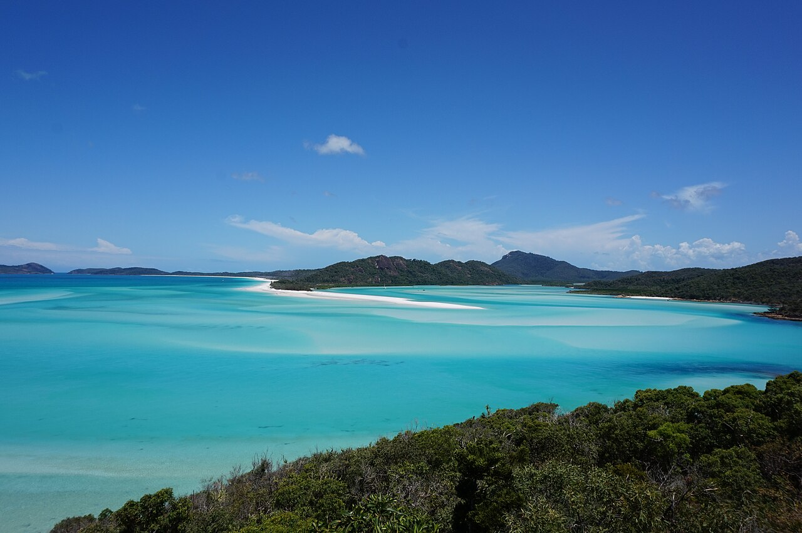

Whitehaven Beach
Whitsundays, Australie · baignade, snorkeling, paddle

Sable de silice d’un blanc pur et eaux tourbillonnantes turquoise au cœur des Whitsundays : baignade et paddle de rêve.
- Lieu
- Whitsundays, Australie
- Niveau
- Débutant
- Activités
- baignade, snorkeling, paddle
- Type d'eau
- Mer / océan
- Coordonnées
- -20.28, 149.04 (position approximative du secteur)
Dangers à connaître
- Méduses dangereuses présentes toute l’année, risque plus élevé de novembre à mai (combinaison).
- Accès en bateau ou hydravion.
Le conseil d'Ocean Buddy
Les méduses dangereuses sont présentes toute l’année, surtout de novembre à mai (l’office du tourisme local les dit fréquentes dès octobre) : porte un lycra intégral et suis les panneaux.
Ouvrir dans Ocean Buddy Télécharger sur l'App Store
Source : Description historique Ocean Buddy · vérification externe en attente.